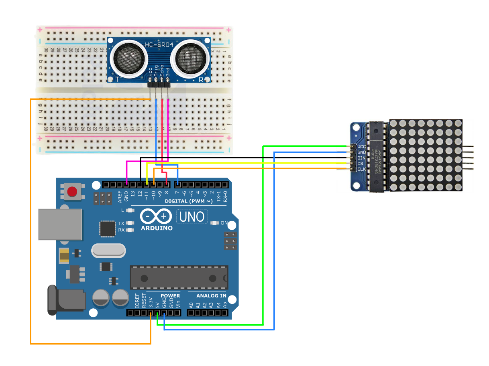

De labweken zijn begonnen! De komende twee weken gaan mijn duo (Eefje Francken) en ik hard aan het werk om een eindproduct te realiseren. Het onderwerp waarvoor wij een eindproduct voor gaan bouwen is Wearables. Het proces van deze labweken houd ik hieronder per dag bij. Ik zal per dag uitleggen wat wij hebben uitgevoerd en vertellen hoe het is gegaan. Hierbij probeer ik ook iedere dag wat visueels aan toe te voegen om jullie echt mee te kunnen nemen in ons proces!
Dag 1
De eerste dag is van start gegaan! Allereerst hebben wij vandaag een gezamelijke kick-off gehad waarin alles wat betreft de labweken nog een keer werden uitgelegd. Vervolgens hadden we een kick-off voor ons onderwerp: Wearables. Hierin liet de docent wat inspiratie zien van projecten die de voorgaande jaren gemaakt zijn. Ook hebben wij toegang gekregen tot de Miroboard waarin iedereen elke dag zijn proces moet vastleggen.
Na de kickoff ben ik samen met mijn duo in de call gegaan op Teams. Hierin hebben wij allereerst een planning gemaakt voor vandaag:
Wij hebben samen besloten om iedere ochtend een planning vast te stellen voor de dag zelf. Na het maken van de planning, zijn wij meteen aan de slag geweest met het opdoen van inspiratie. De inspiraties hebben wij vastgelegd in een gezamelijk Adobe XD bestand. Vervolgens hebben wij gebrainstormd. Wij zijn uiteindelijk geïnspireerd door wat leuke wearables concepten en uiteindelijk zelf op een leuk concept uitgekomen. Namelijk een t-shirt met een LED matrix erop die een groene smiley weergeeft wanneer iemand genoeg afstand houdt, en een rode frowney weergeeft wanneer iemand niet genoeg afstand houdt. Dit gaat samen met een speaker die afgaat wanneer iemand te dicht bij je staat. Het doel van dit concept is om de coronaverspreiding te kunnen voorkomen. Wij hebben hier inspiratie gehaald uit wearables projecten en hebben hier onze eigen draai aangegeven. Om een beeld te geven van het concept hebben wij dit hieronder visueel weergegeven samen met onze inpsiraties en brainstorm:
Om de volgende dag samen fysiek verder te kunnen gaan met het experimenten met Arduino en ons concept, hebben wij benodigdheden vastgesteld die we de volgende dag mee moeten nemen. Dat zijn:
Hierna hebben wij onze eerste dag succesvol afgerond en bereiden we ons voor voor de volgende dag (fysiek) waarin we zullen gaan experimenteren!
Dag 2
Vandaag zijn wij na de algemene kick-off samen fysiek van start gegaan. Hiervoor zijn wij eerder naar school gegaan om samen te kunnen experimenteren met Arduino. Allereerst hebben wij een planning gemaakt wat wij vandaag wilde bereiken. Namelijk:
- - Experimenteren met LED Matrix - Experimenteren met Ultrasonic Sensor - Experimenteren met Piezo speaker sound
Aan de hand van deze experimenten wilden wij kijken hoe wij deze drie dingen samen kunnen combineren voor het uiteindelijk concept.
LED Matrix
Voor het experiment met de LED Matrix, hebben wij opdracht 7A van de Arduino workshop herhaald. Hierin hadden wij namelijk geëxperimenteerd met de smiley en frowney face. Wij wilden voor ons concept een groene smiley kunnen tonen op de LED Matrix wanneer iemand genoeg afstand van je houdt, en een rode frowney wanneer iemand te dicht bij je staat. Dus zijn wij wezen zoeken op het internet hoe je de rode LED Matrix kleur kon veranderen naar groen. Achteraf bleek dit niet mogelijk te zijn met de LED Matrix die wij in bezit hebben. Om het een duidelijk onderscheid te kunnen geven, hadden wij daarom besloten om in plaats van een frowney, een kruis te gaan gebruiken. Dit hebben wij gedaan omdat je niet zo gemakkelijk op een LED Matrix kan zien of het nou een blij of verdrietig gezicht is zonder onderscheidende kleur.
Ultrasonic Sensor
Om weer even in te komen hoe het Ultrasonic sensor ook alweer werkt, hebben wij opdracht 11A van de Arduino workshop herhaald. Het circuit hebben wij nagebouwd en getest of deze ook de afstand van 1 meter kan meten. Dit voldeed aan onze verwachtingen. Na het testen gaf Arduino wel een error aan, dus hebben we besloten om verder te gaan met de Piezo speaker.
Piezo speaker
Als laatst hebben wij ook nog geëxperimenteerd met de Piezo speaker sound. Tijdens de workshop hebben wij hiermee een sirene sound moeten laten afgaan. Deze sound wilden wij aanpassen naar een alarm zodat men wordt gewaarschuwd wanneer die te dicht op iemand staat. Hiervoor hebben wij de codes aangepast en veranderd naar het gewenste geluid. Deze is hieronder te horen:
Na het experimenteren vandaag, hebben wij onze dag succesvol afgerond. Voor de volgende dag zijn wij van plan om ons concept geheel uit te testen en om alles te combineren wat wij vandaag hebben uitgevoerd.
Dag 3
Vandaag ben ik samen met mijn duo na de algemene kick-off weer naar school gegaan om weer verder te experimenteren. Het doel van vandaag was het combineren van de LED Matrix, Piezo Speaker en de Ultrasonic sensor en zorgen dat het concept al werkend kon worden gemaakt. Tijdens het experimenteren zijn we erachter gekomen dat deze outputs op het arduino board veel dezelfde inputs nodig hadden. Zo moesten ze alle drie bijvoorbeeld in de 5V en de GND. Om dit op te lossen, hadden wij besloten om twee arduino boarden samen te voegen. Dit verliep helaas niet zoals we hadden verwacht dus moesten we weer een ander oplossing bedenken.
Wij hadden hierna besloten om de LED Matrix en de Ultrasonic sensor op één arduino board te laten samenwerken, en de Piezo speaker en de andere Ultrasonic sensor op de andere arduino board. Allereerst probeerde wij de LED Matrix en de Ultrasonic sensor op de ene arduino board werkend te krijgen. Het doel was om op de LED Matrix een kruisje te laten verschijnen wanneer iemand niet genoeg afstand van je hield. En wanneer dit wel het geval was, dan moest er een smiley verschijnen. Dit was ons uiteindelijk gelukt en hebben wij vastgelegd op film:
Hierna wilden wij verder gaan met de speaker en de Ultrasonic sensor. Hier hebben wij lang mee zitten spelen en was het ons uiteindelijk nog niet gelukt om het werkend te krijgen zoals wij wilden. Dus gaan wij hier morgen mee verder!
Dag 4
Vandaag zijn wij de kick-off gestart op school. Hierna zijn wij meteen verder wezen experimenteren met de Piezo speaker en de Ultrasonic sensor. Deze lukte al vrij snel! De speaker ging af wanneer de afstand te klein was, en de speaker ging weer uit wanneer er genoeg afstand was. Het concept was dus eigenlijk al gelukt.
Toen kregen wij als feedback van de docent om het concept iets origineler te maken, bijvoorbeeld dat je in plaats van afstand moet houden, juist dichter bij elkaar moest komen om de speaker af te laten gaan. Wij hebben toen verder zitten brainstormen hoe wij ons concept iets aan konden passen. Uiteindelijk zijn wij tot een nieuw concept gekomen, namelijk een verjaardag T-shirt. De bedoeling is om de Piezo speaker een verjaardagsliedje af te laten spelen en op de LED Matrix een ballon moet verschijnen wanneer iemand dicht bij je komt staan (bijvoorbeeld binnen 1 meter). En wanneer iemand verder weg van je staat, zal de speaker niet af gaan en verschijnt er op de LED Matrix een ‘Hi’. Dit concept kan als een leuke herinnering dienen voor klasgenoten/vrienden die je verjaardag vergeten zijn, maar eraan herinnerd worden wanneer ze vlak naast je komen te staan.
Wij zijn hierna verdergegaan met het aanpassen van de Piezo speaker. We wilden namelijk dat de speaker ‘Happy Birthday’ afspeelde wanneer iemand dicht bij je kwam staan. Dus hebben wij wat geëxperimenteerd en dit is het resultaat:
Met de ballon op de LED Matrix gaan wij morgen verder!
Dag 5
De laatste dag van de eerste week zit er alweer op! Vandaag zijn wij weer samen op school verdergegaan. Het doel van vandaag was om even te brainstormen of er eventueel wat anders op de LED Matrix kan komen dan een ballon. Wij dachten aan een taart of een kaars. Wij hebben toen even een schets gemaakt van hoe de LED er dan uit komt te zien. Dit was helaas geen succes. De taart en kaars vormen waren moeilijk te zien. Dus hebben we besloten om het gewoon te houden op de ballon. Hier hebben wij ook een schets voor gemaakt. De bedoeling is om de ballon in een loop te laten spiegelen zodat het lijkt alsof de ballon beweegt. Voor de ‘Hi’ is ook een schets gemaakt. De schetsen zijn hieronder te zien:
Hierna hebben wij dit geprojecteerd op de LED Matrix. Er verschijnt nu een ballon wanneer iemand dicht bij de jarige komt staan, en van een afstand zal er ‘Hi’ staan.
Verder hebben wij schetsen gemaakt van onze Arduino circuit zodat wij deze voor de volgende keer exact kunnen nabouwen, en dit ook duidelijker oogt voor ons zelf.
Arduino circuit Ultrasonic sesnor & Piezo speaker

Arduino circuit Ultrasonic sensor & LED Matrix
Dag 6
Een nieuwe week is weer van start gegaan! Vandaag zijn wij eerst samen online begonnen om even te gaan brainstormen hoe we de Arduino gaan plaatsen op het T-shirt. Dit hebben wij gedaan door even wat inspiratie op te zoeken naar andere Wearable T-shirt projecten en door even zelf te brainstormen.
Uiteindelijk zijn wij op het idee gekomen om binnen het shirt een vakje te gaan naaien waar de Arduino en breadboards in kunnen. De LED Matrix, de twee Ultrasonic sensoren en de speaker wilden door het shirt heen laten komen. Om dit te proberen, zijn wij vervolgens fysiek op school verdergegaan. Wij zijn begonnen met het naaien van het vakje binnen het shirt. Vervolgens hebben wij geprobeerd om alles in het vakje te stoppen. Dit ging helaas niet helemaal volgens plan. We merkten dat het T-shirt erg zwaar begon te worden en het ook niet heel draagbaar zou zijn. Het zag er overigens ook niet meer heel leuk uit, dus hebben we even last minute een ander plan bedacht. We wilden het namelijk proberen op een tas (een tote bag). Hier gaan wij de volgende dag even mee experimenteren.
Dag 7
Om vandaag direct aan de slag te kunnen gaan met onze nieuwe idee (de tas), zijn wij maar gelijk gaan afspreken op school om alles te testen. Allereest hebben wij een schets gemaakt van hoe het er ongeveer uit komt te zien. Deze zie je hieronder:
Uiteindelijk zijn wij wel even bezig geweest om alles op z’n plek te krijgen in de tas vanwege alle draden. Wij hebben namelijk de twee breadboards naast elkaar vastgemaakt zodat de twee Ultrasonic sensoren op de juiste afstand van elkaar staan en tegelijk werken. Om de Ultrasonic uit de tas te laten steken, hebben wij kleine gaten gemaakt. Hetzelfde voor de LED Matrix en de speaker. Dit was ons uiteindelijk gelukt!
Wij zijn hierna alvast begonnen met het filmen van het eindproduct. Hieronder een kleine preview!
Dag 8
Vandaag stond in het teken van het editen van de video die wij tijdens de presentatie willen tonen. Wij hadden beide nog geen ervaring met het editen van video’s, dus was het wel even uitzoeken hoe alles werkt. Wij begonnen het editen op Adobe Premiere en hebben vervolgens ook nog wat andere edit programma's geprobeerd, maar merkte dat deze niet helemaal ideaal werkte en dat het toevoegen van effecten ook een beetje lastig was. Vervolgens probeerden wij dit op Power Editor. Deze kregen we uiteindelijk wel onder de knie en hebben we een beetje geëxperimenteerd met effecten. Wij zijn blij met het eindresultaat! Hieronder een sneakpeak:
Dag 9
De laatste dag is aangebroken! De expo vindt de volgende dag al plaats, dus moeten we ons natuurlijk goed voorbereiden. Wij zijn daarom begonnen met het maken van een klein script en hebben even de punten beschreven wat wij tijdens de expo willen vertellen. Ook zijn wij bezig geweest met het maken van de presentaties slides op Canva. Wij hebben weleens vaker gehoord dat je op Canva mooie presentaties kan maken, dus hebben wij daarop even geëxperimenteerd. Uiteindelijk hebben wij even geoefend met het presenteren en zijn we klaar voor de expo!